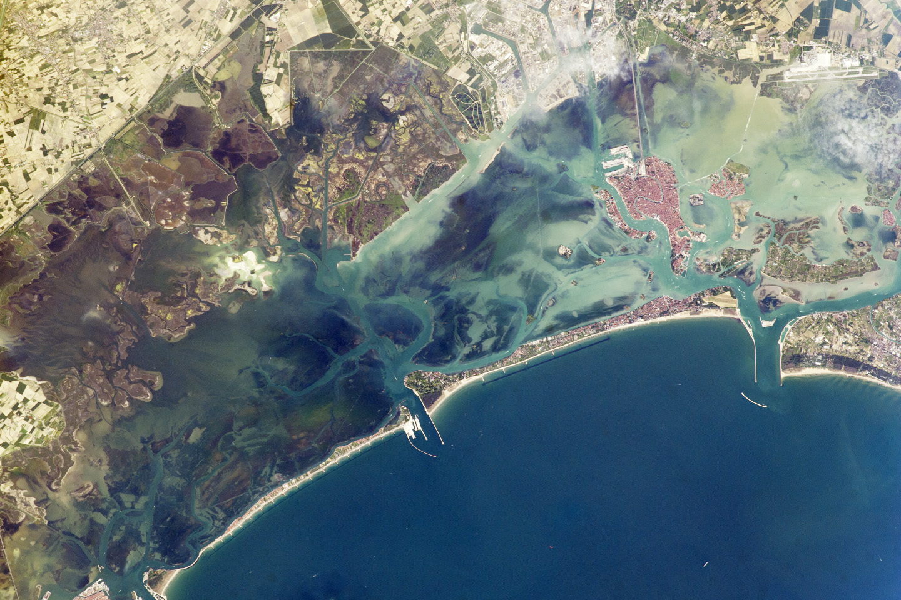
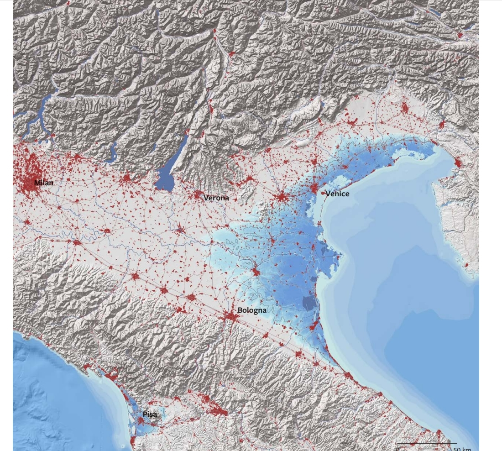
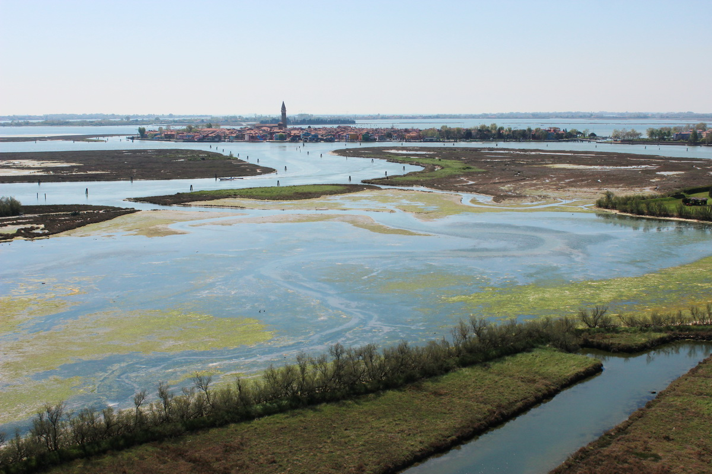
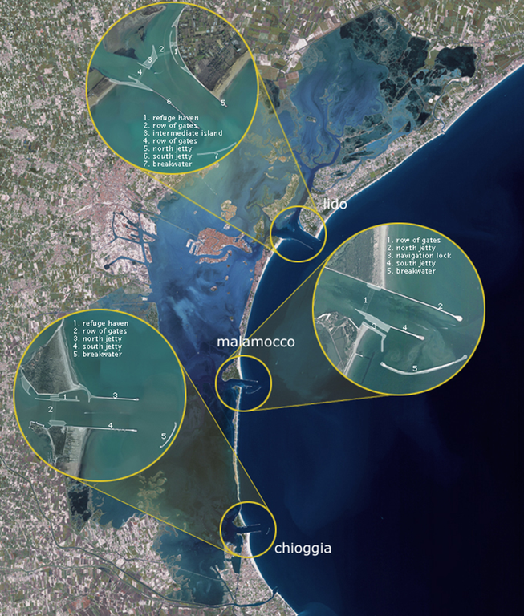
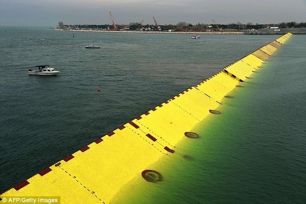
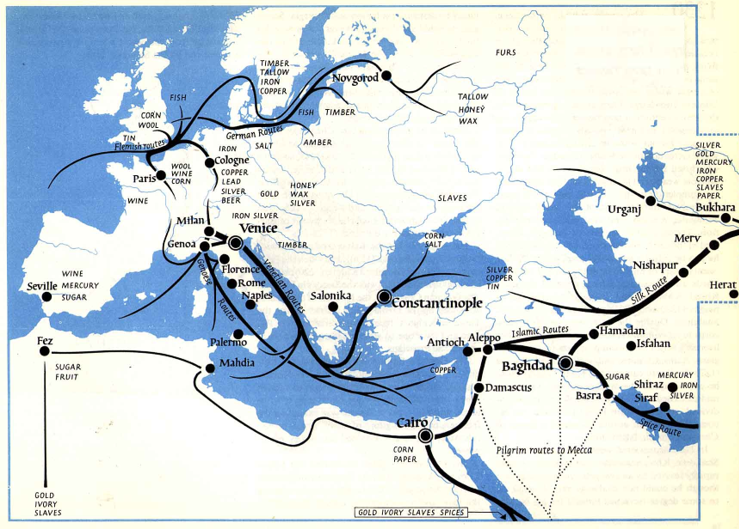

De lagune van Venetië
Wat is een lagune?
Een lagune is een baai die deels is afgesloten door eilanden, zandruggen en soms zelfs koraalriffen. Vaak is een lagune een onderdeel van een grotere kustzone. Daarnaast zijn eilanden in de buurt van een lagune vaak bewoond, omdat de uitgestrekte wetlands in lagunes aantrekkelijk zijn voor landbouw. De eilanden die een barrière vormen, zijn vaak ontstaan door mariene sedimentatie, bestaand uit zand wat is opgestuwd door de zee.
De Lagune van Venetië wordt geassocieerd met uitdijende urbane ontwikkelingen. Het metropolitaanse gebied Padua-Treviso-Venice, of wel Patreve, heeft in totaal 1.6 miljoen inwoners, waarvan 60.000 in de historische stad Venetië wonen. De oppervlakte van het gebied bedraagt 8269 km2. Het aantal inwoners per vierkante kilometer is 193. Door het onttrekken van grondwater in het gebied, zijn de eilanden in de lagune aan het dalen. De stad Venetië maakt ook deel uit van dit probleem. Het wateronderhoud van de lagune van Venetië is zeer complex en speelt al sinds de middeleeuwen een belangrijke rol bij het toegankelijk maken van het water. Ook heeft het grotendeels de cultuur in dit gebied bepaald. Daarom noemt men het een amfibische cultuur.
Klimaat
De lagune heeft een vrij vochtig klimaat. Zo valt er 748 mm aan neerslag per jaar, waarvan het meeste in de winter en lente valt. De gemiddelde temperatuur in het gebied varieert van 0 °C in de winter tot 30 °C in de zomer.
Transport netwerken
De lagune heeft twee belangrijke hubs. De toeristische stad Venetië en het industriële gebied Venetië-Mestre. Met netwerken van treinsporen en autowegen zijn deze twee plaatsen verbonden met een groot deel van Patreve en de kust.
Bovenstrooms
In de bovenstroom van de lagune van Venetië is een uniek landschap te vinden. Er is namelijk veel agrarisch gebied opgezet in kleine perceeltjes met hier en daar kronkelend oude riviertjes erdoorheen. Dit gebied heeft zich in honderden jaren op deze manier ontwikkeld doordat het al lang een traditie is om het landschap te draineren en beschikbaar te maken voor landbouw. De laatste jaren is het gebied flink aan het verstenen waardoor de kans op overstroming bij extreme neerslag steeds groter wordt. En klimaatverandering zorgt er ook nog eens voor dat er vaker extreme neerslag zal vallen. Er moet dus goed gekeken worden naar oplossingen voor dit groeiende probleem.
Benedenstrooms
In de fascistische periode van Italië rond 1930, heeft het land besloten om de lagere delen van de lagune te gebruiken voor intensieve landbouw. Daarom is het gebied ontgonnen, zijn er dijken gebouwd en sloten gegraven. Italië vond dat ze in deze periode zelfstandig hun eigen voedselvoorziening moesten creëren. Dit deden ze vooral om de trots van het land te behouden. Het ontstaan van het lager gelegen deel van de lagune is dus grotendeels beïnvloed door de cultuur. Verder bestaat de lagune benedenstrooms uit drassig gebied met polders. Rivieren die de boel dicht slipte met sediment zijn van de lagune weggeleid om verzanding te voorkomen. Dit zorgt ervoor dat er geen oponthoud voor de scheepvaart is.
Welke gevaren liggen er op de loer?
Ten eerste is er een kans op overstromingen, wat door de grootschalige ontginningen van rond 1930 is veroorzaakt. Daarom is er tegenwoordig weer sprake van het ongedaan maken van de ontginningen. Daarnaast is er herontwerp en onderhoud van kanaaltjes nodig en moet er gebruik worden gemaakt van gesloten bergingen in de bovenstroom van het gebied, zodat de druk op het watersysteem kan worden verlaagd wanneer dat nodig is. Deze bergingen voorkomen dat er te veel water moet worden afgevoerd waardoor de kans op overstromingen in de benedenloop aanzienlijk kleiner is. Mocht dit toch misgaan dan zal het ook helpen als er laaggelegen gebieden worden aangewezen als noodoverloopgebieden.
Bodemdaling van Venetië
Een bekend probleem is dat Venetië aan het zakken is. Sinds 1897 is de stad al 25 centimeter gezakt. Gelukkig worden er maatregelen genomen tegen dit probleem. Zo wordt het niveau van straten en stoepen verhoogd. Daarnaast is er het MOSE project, waardoor er stormvloedkeringen in de drie openingen (mondingen) van de lagune zijn geplaatst, die als het ware op de bodem liggen van de monding. Bij hoog water komen ze omhoog en sluiten ze de baaien af. Hierdoor wordt de doorstroming van water volledig geblokkeerd en wordt het gevaar op overstromen geminimaliseerd.
Hiernaast zijn de drie mondingen van de lagune van Venetië te zien.
Hierboven is een van de stormvloedkeringen te zien die is geplaatst in een monding.
Geschiedenis van Venetië
In de oudheid werd de lagune van Venetië bewoond door de Veneti, een Gallische stam afkomstig uit Bretagne. In die tijd was het Romeinse Rijk ook nog erg groot. Maar door de inval van de Hunnen uit het noord westen en de inval van de Longobarden uit het noorden, zijn steeds meer Romeinen naar het zuiden getrokken en hebben hun toevlucht gezocht op onder andere de eilandjes van Venetië, waarna op 25 maart 421 door de romeinen de stad Venetië officieel is gesticht.
Na de ondergang van het West-Romeinse Rijk in 476, ging Venetië deel uitmaken van het Byzantijnse Rijk. Hierna is de stad zich langzaam gaan uitbreiden over de eilandjes in de lagune. Bouwwerken werden op houten palen gebouwd die onder water stonden. Tussen deze bouwwerken werd ruimte overgelaten voor kanaaltjes die dienden als transportroutes. Deze indeling van de stad is nog steeds terug te zien in het heden.
Tussen de 9e en 12e eeuw is de macht en rijkdom van Venetië sterk toegenomen. Dit kwam vooral door de strategische ligging aan de Adriatische Zee. Door deze ligging kon Venetië uitgroeien tot een machtige handelsstad. Op de kaart hieronder is te zien dat Venetie vele connecties had.
In de 15e eeuw hebben de Venetianen nog de loop van een aantal rivieren verlegd om zo de stad te beschermen tegen aanvallen vanaf het land. Maar desondanks verloor de Republiek van Venetië steeds meer gebieden aan het Ottomaanse rijk. Daarnaast begon de monopolie op de handel ook scheurtjes te vertonen, omdat de Venetiaanse galeien niet geschikt waren om te reizen over de oceanen. Hierdoor werd de concurrentie te groot, mede door de opening van de handelsroutes van de Portugezen die vanuit Lissabon lucratieve handel dreven met landen als India. Daarnaast maakten de verschillende uitbraken van de pest veel slachtoffers onder de Venetianen. Jaren later heeft Napoleon de stad veroverd, waarna het na de Napoleontische Oorlogen in handen van Oostenrijk kwam. Uiteindelijk werd Venetië in 1866 een onderdeel van het nieuwe koninkrijk Italië.